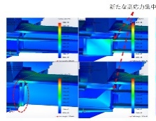
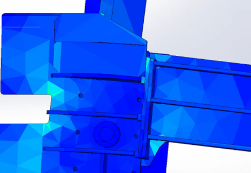
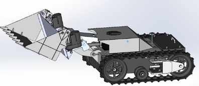
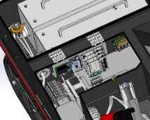
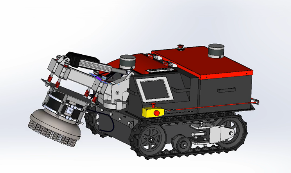
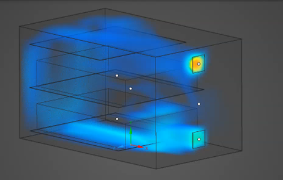
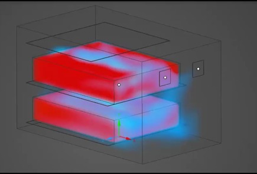
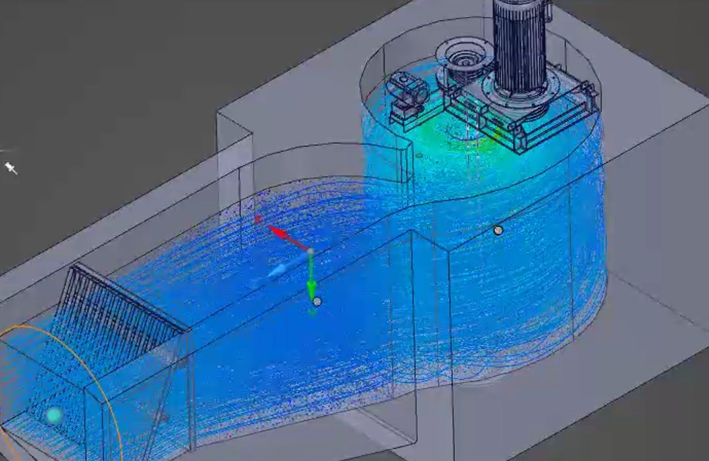
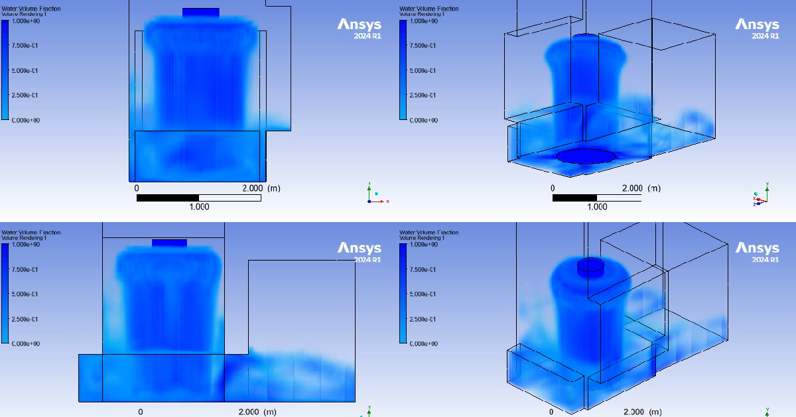
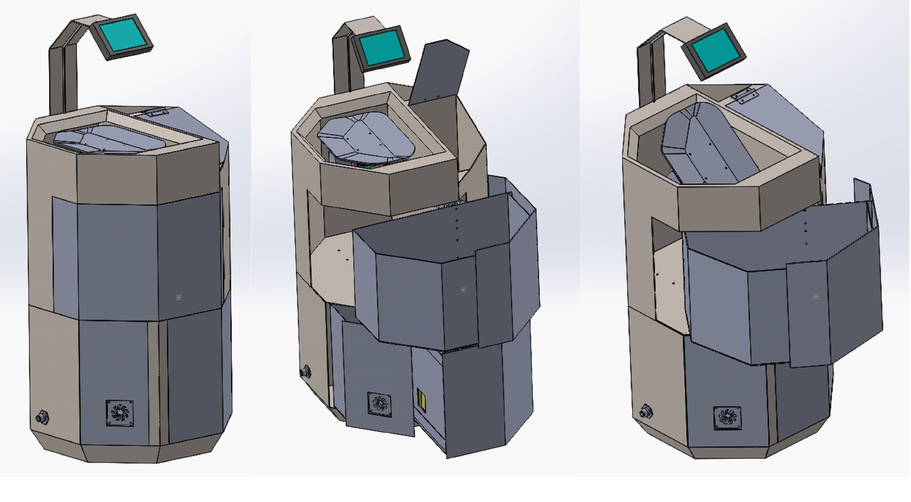

6 projects
Internship / Contract projects
Mechanical design and simulation contributions to company and startup projects.
NE750J Structure Improvement
Used structural analysis and ML-assisted optimization to improve crawler reinforcement and reduce stress.


Parallel-Linkage Bucket Robot
Designed a compact parallel-linkage arm; analyzed motion, structural response, and actuator loading.

Floor Polish Robot
Designed a spring-loaded mechanism, component packaging, sensor mounts, and cable routing. For the use of cement polishing.


Battery Thermal Management
Designed vent placement and battery positioning to improve airflow and heat dissipation within the battery pack.


Micro-Hydro System
Prepared mechanical layouts and installation drawings; used CFD to verify flow behaviour.


Nusabin Sorter & Composter
Developed sheet-metal features and mechanisms; supported fabrication planning and sorting–composting system integration.
